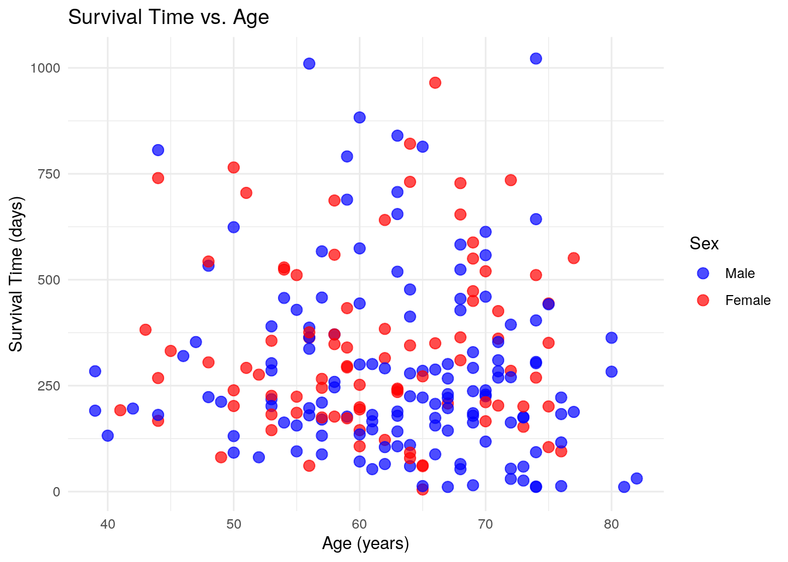
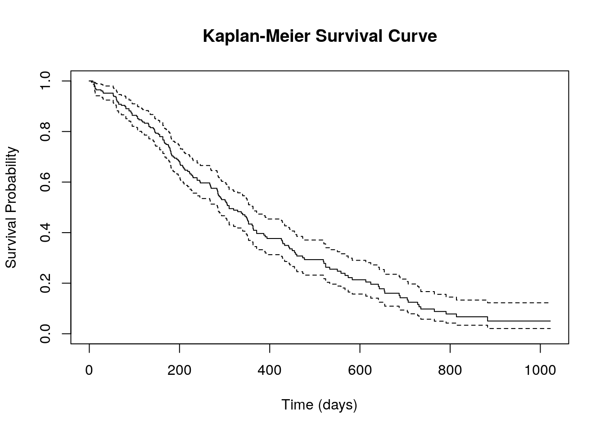
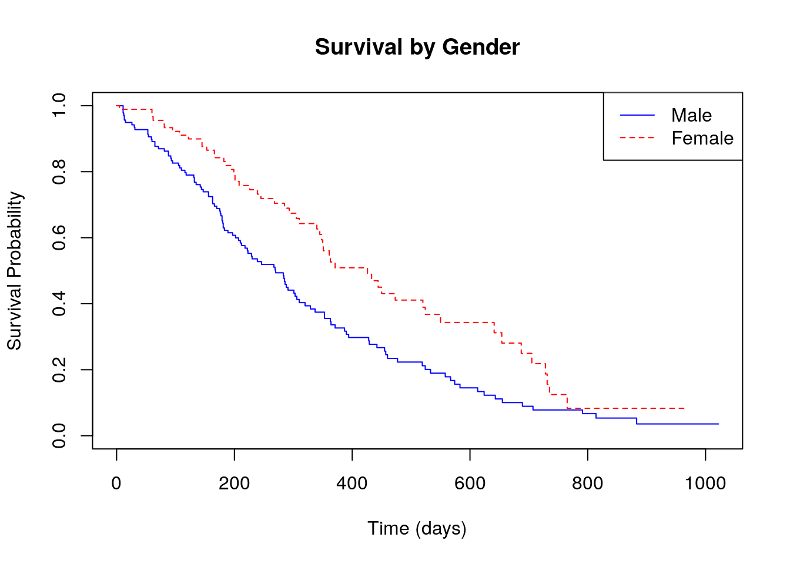
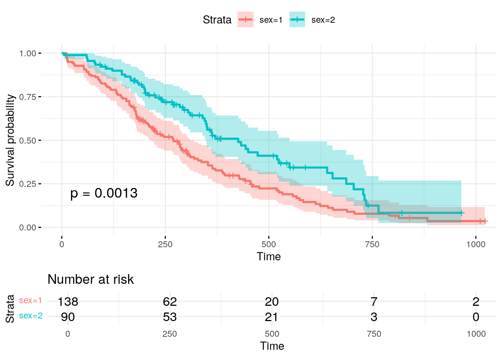

I am the Research Database Administrator for a hospital in Toronto, Canada. I have over 20 years experience in database administration and all things healthcare data-related. I have been using R now for over 7 years, and have become increasingly appreciative of it’s flexibility, power, and user-friendly environment.
I am self-taught for many of these skills, so you can do it too!
I’m a hardcore fan of heavy metal music, coffee, and ridiculously spicy food🔥, and spend my spare time chasing my 5 1/2 year old son around the house (or cleaning up his never-ending piles of PlayDoh, Legos, and Hot Wheels🚗!).
I’m a Geek that loves data, R, and passionate about taking complex topics and breaking them down for easier consumption.
This is the more detailed version of the presentation given for the ITN Workshop at the University of Michigan on Analyzing Clinical Data.
❓ Questions about the content (but not support questions!) can be emailed to chris.battiston@wchospital.ca.❓
The goals are to:
sqlr - Your best friend in data managementggplot2 - Your best friend for visualizationssurvival - Your best friend for analyzing survival
datasurvminer - Your best friend for making publication
ready survival analysis data plotsClinical data analysis is a complex process that requires careful attention to the following to ensure accurate and meaningful results:
High-quality data is the foundation of reliable analysis. Data cleaning, standardization, and validation are essential first steps:
Compliance with regulatory and ethical guidelines is paramount in clinical data analysis. Regulations such as HIPAA, PHIPA, and GDPR dictate stringent rules on data privacy and security. Ethical considerations also play a crucial role, requiring approval from an Institutional Review Board (IRB) or Research Ethics Board (REB) before conducting research involving human data. De-identification techniques, including data masking and anonymization, must be implemented when sharing or analyzing patient data to protect personal information and ensure compliance with ethical and legal standards.
Data security and controlled access are critical in clinical research, given the sensitivity of health-related information. The following practices can help ensure the data remains secure:
Check out the ITN course on data ethics which includes information about security for more information.
The choice of analytical methods depends on the study objectives and the nature of the dataset. Descriptive statistics, such as means, medians, and distributions, provide insights into patient demographics and baseline characteristics. Inferential statistics, including hypothesis testing, regression analysis, and survival analysis, help in understanding relationships between variables and making predictions. Increasingly, machine learning models are being applied in clinical research for predictive analytics, risk stratification, and pattern detection. However, such models must be interpreted with caution, ensuring transparency, bias mitigation, and clinical relevance.
Reproducibility and transparency are crucial for ensuring the credibility of clinical data analyses. Maintaining well-documented protocols, version-controlled scripts, and metadata helps facilitate data traceability and consistency across studies. Open-source platforms, such as GitHub or Jupyter Notebooks, enable researchers to share code and methodologies, promoting collaboration and validation. Standard Operating Procedures (SOPs) should be established to outline clear and repeatable methodologies for data processing, ensuring consistency across different analyses and research teams.
Integration with external systems further enhances the efficiency and scalability of clinical data management. The following can help:
Finally, researchers must be mindful of potential biases and the interpretation of findings. Confounding variables should be identified and adjusted for in study designs to avoid misleading conclusions. Additionally, ensuring that study findings are generalizable beyond the sample population is crucial for clinical applicability. Emphasizing clinical relevance rather than mere statistical significance is essential, as results should ultimately contribute to improved patient care, treatment decisions, and healthcare policies.
R is a massive, fully customizable data management environment. To do it any justice, I’d need a week of classes - so given this is based on a short workshop I gave, I’m going to cover a lot of content that I was not able to cover in the session.
R is driven largely by what are called “libraries” or “packages”, which are basically plugins or extensions created by the R User Community. For every one task you can do in R, there is likely going to be a multitude of packages you can choose from - as you move forward in becoming an R User, spend time familiarizing yourself with the various packages to see what each offers.
Designed for statistical computing, data analysis, and visualization,
R is widely used in academia, research, and industry for tasks ranging
from basic data manipulation to advanced machine learning. As mentioned,
one of R’s key strengths is its extensive package ecosystem, which
allows users to extend its functionality by installing and calling
specialized libraries such as ggplot2 for visualization,
dplyr for data manipulation, and survival for
survival analysis. Installing and loading libraries is crucial because
many of R’s advanced features are provided through community-contributed
packages rather than built into the base language.
Compared to SAS, R offers greater flexibility, a more active community, and as it’s open-source, R has better support for cutting-edge statistical techniques and machine learning. While SAS is known for its reliability in enterprise environments, R’s extensive visualization capabilities and its integration with modern tools like Shiny and R Markdown make it a more versatile choice. R is also free, whereas SAS requires a costly license, making R more accessible to individuals, startups, and educational institutions.
R’s increasing popularity is driven by the rise of data science, the availability of extensive online learning resources, and its ability to integrate with other programming languages like Python and SQL. It is particularly favored for research and academic work because of its strong statistical modeling capabilities and the transparency of its open-source development. Additionally, companies are adopting R for business analytics, finance, healthcare, and bioinformatics, further solidifying its role in modern data-driven decision-making.
Beyond R, effective clinical data management and analysis require specialized tools that facilitate data collection, storage, security, and compliance with regulatory standards. Several platforms are widely used in clinical research, each offering unique functionalities to support various study designs and workflows. Among these, OpenClinica, Qualtrics, and REDCap stand out as essential tools for managing clinical data efficiently.
OpenClinica is a powerful open-source electronic data capture (EDC) system designed for clinical trials and observational studies. It supports regulatory-compliant data management in accordance with Good Clinical Practice (GCP), FDA 21 CFR Part 11, and other global standards. OpenClinica offers advanced features such as case report form (CRF) design, real-time data validation, and role-based access control. Its ability to integrate with external systems via APIs allows for seamless data exchange, making it a robust choice for large-scale clinical research. Additionally, OpenClinica provides audit trails, electronic signatures, and automated workflows, ensuring transparency and reproducibility.
Qualtrics is a versatile survey platform commonly used for collecting patient-reported outcomes, quality-of-life assessments, and healthcare experience surveys. It is known for its intuitive interface, customizable survey logic, and sophisticated data analytics. In clinical research, Qualtrics is particularly useful for gathering qualitative and quantitative data from study participants, supporting both longitudinal and cross-sectional study designs. The platform includes built-in compliance with HIPAA and GDPR, making it suitable for sensitive healthcare-related surveys. Additionally, Qualtrics integrates with statistical analysis tools such as SPSS and R, facilitating seamless data processing and reporting.
REDCap (Research Electronic Data Capture), my personal favorite of the three, is a secure, web-based application designed for managing clinical and translational research data. Developed by Vanderbilt University, REDCap is widely adopted by academic and healthcare institutions for its flexibility and user-friendly interface. The platform allows researchers to create custom data collection forms, implement branching logic, and perform automated data validation. REDCap supports multi-site collaborations, ensuring secure data sharing among research teams while maintaining strict access controls. Its compliance with regulatory standards, such as HIPAA and 21 CFR Part 11, makes it a preferred choice for clinical studies that require high levels of data security. Additionally, REDCap’s integration with external databases and statistical software enhances its functionality for complex clinical research projects. Of interest to this group, REDCap has a well-established API functionality that easily allows for integration with R. As will be discussed further in a subsequent section, there are numerous R Packages specifically built to handle REDCap data, thereby streamlining the process even further.
These tools each serve specific purposes in clinical data management, from structured data collection in clinical trials (OpenClinica) to patient-reported data collection (Qualtrics) and customizable, secure data management for diverse research needs (REDCap). By selecting the appropriate tool based on study requirements, researchers can optimize data quality, enhance efficiency, and ensure compliance with ethical and regulatory guidelines.
I wanted to highlight some of my personal favorite R Packages.I work in REDCap often.
REDCapR Facilitates secure
and efficient data transfer between R and REDCap (Research Electronic
Data Capture), a widely used web-based platform for managing research
and clinical study data.REDCapAPIProvides a flexible
interface for interacting with REDCap’s API, enabling users to
efficiently retrieve, update, and manage data stored in REDCap
databases. It offers a comprehensive set of functions for querying
records, exporting metadata, importing data, handling users and project
settings, and managing files or logs. Unlike REDCapR, which focuses on
streamlined data extraction, REDCapAPI provides more granular control
over API calls, making it well-suited for advanced users who need custom
queries, fine-tuned data manipulation, and administrative project
management.redcapcustodian Designed for
managing user permissions and project access within REDCap using the
API. It helps administrators automate tasks such as assigning roles,
modifying user privileges, and auditing access logs across multiple
REDCap projects.redcapDMDesigned to
facilitate data management and quality control for research studies
using REDCap. It provides functions for data cleaning, validation,
monitoring, and reporting, helping researchers ensure data integrity
before analysis. Key features include identifying missing or
inconsistent data, summarizing project metadata, generating automated
reports, and tracking changes over time.
tidygeocoderSimple and
efficient way to perform geocoding and reverse geocoding within a
tidyverse-friendly framework. It allows users to convert addresses into
latitude and longitude coordinates (geocoding) and vice versa (reverse
geocoding) using various online services such as OpenStreetMap
(Nominatim), Google, Bing, and Census Bureau APIs. The package supports
batch processing, making it useful for handling large datasets, and
integrates well with dplyr, enabling seamless incorporation into data
analysis workflows.beeprPlay notification sounds
to signal the completion of code execution. It is especially useful for
long-running scripts, alerting users when a task is finished without
requiring them to monitor the console.DataExplorerSimplifies
exploratory data analysis (EDA) by providing automated functions for
data visualization, summary statistics, and feature engineering. It
enables users to quickly generate descriptive reports, identify missing
values, visualize distributions, detect correlations, and assess data
structure. Key functions include introduce() for dataset
overview, plot_missing() for missing data patterns,
plot_histogram() for distributions, and
create_report() for generating a comprehensive EDA
report.Most people are familiar with RStudio for the purposes of having a
nice user interface for interacting with R. Although a Google Search may
show that there are a number of other UIs such as rattle
and RKWard, I’ve only found one that works on the current
version of R. Called GrapheR, it can be used to make simple
graphing tasks easier for novice, it is not for the advanced user as the
graphics are far too rudimentary.
GrapheR Helps users create and visualize networks and
graph-based data. It simplifies the process of constructing graphs,
visualizing them with various layouts, and analyzing network structures.
The package supports directed and undirected graphs, weighted edges, and
offers a range of layout options for displaying graphs, such as
circular, spring, and hierarchical layouts. GrapheR also
provides utilities for network metrics like degree centrality,
betweenness, and clustering, enabling users to perform network analysis
efficiently. The package integrates well with tidyverse for data
manipulation and supports various export formats, including PDF and PNG
for easy reporting.The final piece of the R “puzzle” I wanted to cover was a bundle of packages and a framework called the tidyverse.
tidyverse - The tidyverse suite of
packages created by Hadley Wickham (among many countless contributors),
and the tidyverse philosophy
centers around a consistent, human-readable approach to data science,
emphasizing tidy data principles where each variable is a column, each
observation is a row, and each value is a cell. It promotes a functional
programming style with clear, pipeable workflows, making data
manipulation, visualization, and analysis more intuitive and efficient.
Check out the original
tidyverse paper.For the purposes of this tutorial, we’re going to be using the following:
sqldfperform SQL queries
directly on R data frames, facilitating the manipulation and analysis of
data using SQL syntax. It enables seamless integration of SQL operations
such as SELECT, JOIN, GROUP BY, and WHERE with R data structures,
without the need to convert data into a database format.
sqldf can handle both simple and complex queries and is
particularly useful for users familiar with SQL who prefer its syntax
for data manipulation. The package supports working with data stored in
data frames, tables, or external databases like SQLite and
MySQL.
ggplot2 One of the most
widely used libraries for creating data visualizations. It is based on
the Grammar of Graphics, which provides a systematic approach to
building plots by combining various components such as data, aesthetic
mappings (e.g., x and y axes, color, size), geometries (e.g., points,
lines, bars), and statistical transformations. With
ggplot2, users can easily create a wide range of static and
dynamic visualizations, including scatter plots, bar charts, histograms,
line graphs, boxplots, and more. It also provides robust customization
options for themes, labels, and scales, allowing users to tailor
visualizations for publication-quality graphics. The
ggplot2 package integrates well with other tidyverse
packages, making it a powerful tool for data exploration, analysis, and
presentation.
survivalcomprehensive tool
for performing survival analysis and modeling time-to-event data. It
provides functions to fit and analyze various survival models, including
the Cox proportional hazards model, Kaplan-Meier estimators, and
parametric survival models (e.g., exponential, Weibull). The package
includes methods for estimating survival curves, performing log-rank
tests for comparing survival between groups, and handling censored data
(where an event has not occurred for some individuals by the end of the
study). The survival package also allows for advanced statistical
techniques such as frailty models and competing risks analysis. It is
widely used in clinical research, epidemiology, and other fields
involving time-to-event data.
survminerspecifically
designed for visualizing survival analysis results. It provides
functions to create publication-ready survival plots, such as
Kaplan-Meier curves, survival curves by groups, and hazard ratio plots.
The package allows for easy customization of plots, including
adjustments to colors, labels, legends, and axes, and supports the
addition of confidence intervals and p-values to plots.
survminer works seamlessly with the survival package in R,
which is used to perform survival analysis. It is particularly useful
for researchers and analysts working with clinical or time-to-event
data, enabling them to generate clear, informative, and visually
appealing plots to communicate survival outcomes effectively.
To use these in R we need to first load them in memory like so:
library(sqldf)
library(ggplot2)
library(survival)
library(survminer)We will use the lung dataset available in the survival
package. The data contain subjects with advanced lung cancer from the
North Central Cancer Treatment Group. It includes the 10 following
variables:
Now that we have loaded the survival package, we can
check it out just by typing lung. We will use the
head() function to just preview the first several rows of
data.
head(lung)## inst time status age sex ph.ecog ph.karno pat.karno meal.cal wt.loss
## 1 3 306 2 74 1 1 90 100 1175 NA
## 2 3 455 2 68 1 0 90 90 1225 15
## 3 3 1010 1 56 1 0 90 90 NA 15
## 4 5 210 2 57 1 1 90 60 1150 11
## 5 1 883 2 60 1 0 100 90 NA 0
## 6 12 1022 1 74 1 1 50 80 513 0The sqldf package allows users to execute SQL queries on
R data frames, providing a convenient way to subset, filter, and
summarize data. It is especially useful for those familiar with SQL but
not as comfortable with R’s native data manipulation functions like
dplyr or data.table.
Since SQL is often considered more intuitive and readable,
sqldf enables users to write queries in a “plain English”
style rather than learning complex R-specific syntax. One of its
advantages is that it treats R data frames as database tables, allowing
users to perform operations like filtering, joining, grouping, and
ordering without converting the data into another format. The queries
are executed using an in-memory SQLite database by default, ensuring
efficiency without the need for an external database system. The basic
syntax follows standard SQL conventions, with the query enclosed in
double quotes within the sqldf() function.
For example, if you wanted to retrieve all columns for the first 10
rows in the lung dataset where age > 60, you would use:
sqldf("select * from lung where age>60 limit 10")
## inst time status age sex ph.ecog ph.karno pat.karno meal.cal wt.loss
## 1 3 306 2 74 1 1 90 100 1175 NA
## 2 3 455 2 68 1 0 90 90 1225 15
## 3 12 1022 1 74 1 1 50 80 513 0
## 4 7 310 2 68 2 2 70 60 384 10
## 5 11 361 2 71 2 2 60 80 538 1
## 6 7 166 2 61 1 2 70 70 271 34
## 7 16 654 2 68 2 2 70 70 NA 23
## 8 11 728 2 68 2 1 90 90 NA 5
## 9 1 144 2 67 1 1 80 90 NA 15
## 10 22 613 2 70 1 1 90 100 1150 -5The package supports a variety of operations, making it a versatile tool for data analysis.
COUNT,
AVG, MIN, and MAX, allow users to
quickly compute statistics on datasets.ORDER BY clause, and merging datasets is effortless using
SQL joins, such as INNER JOIN and
LEFT JOIN.sqldf can be used for data cleaning and
validation, helping identify duplicates, missing values, or
inconsistencies within a dataset.Here is a basic example of using sqldf to create a basic
summary table:
sqldf("select sex,
count(*),
count(case when (age<=60) then 1 end) as LTE60,
count(case when (age>60) then 1 end) as GT60
from lung group by sex order by sex")Here’s the output:
## sex count(*) LTE60 GT60
## 1 1 138 49 89
## 2 2 90 45 45This is a good example of how a more advanced query is still easy to understand, allowing for even complex SQL queries to be relatively easy to understand by new users.
One of the biggest benefits of sqldf is its familiar syntax, making it an ideal choice for users who are comfortable with SQL but not R’s built-in data manipulation tools. It is lightweight and efficient, as it uses an in-memory SQLite database for quick execution, and requires no additional database setup. Since it works directly with R data frames, there is no need to export data into a separate SQL environment.
However, while sqldf is excellent for quick exploratory
analysis and ad-hoc querying, it may not be the best choice for
very large datasets, where optimized R packages like
dplyr or data.table provide faster
performance. Nonetheless, for small- to medium-sized datasets,
sqldf remains an accessible, powerful, and intuitive tool
for SQL-based data analysis in R.
ggplot2ggplot2 is a complete framework for developing complex
graphs, with an extensive series of options and customizations
available. Based on
The
Grammar of Graphics by Leland Wilkinson, it provides a structured
approach to creating a wide variety of static, animated, and interactive
visualizations with a consistent syntax. One of its key features is the
layered approach, where plots are built step by step by adding
components like points, lines, bars, and annotations. The aesthetic
mapping (aes()) function allows users to define how data
variables correspond to visual properties such as axis positions,
colors, sizes, and shapes.
Different types of plots are created using geometries
(geom_xxx) including:
geom_point() for scatter plotsgeom_line() for line chartsgeom_bar() for bar plotsgeom_histogram() for histogramsFor multi-panel displays, faceting allows splitting data into smaller
subplots using facet_wrap() or
facet_grid().
The package also provides themes (theme_xxx) for
customizing plot appearance, including background, text size, legend
placement, and grid lines.
Users can further control plot elements through scales
(scale_*), which adjust axis limits, color gradients, and
transformations.
Incorporating statistical summaries is easy with statistical
transformations (stat_*), such as
geom_smooth() for regression lines and
geom_density() for density estimates. Additionally,
extensions like gganimate for animations, ggthemes for
additional styles, and patchwork for arranging multiple
plots enhance its functionality.
The ggplot2 package is widely favored for its
declarative syntax, which separates data, aesthetics, and layers, making
complex visualizations intuitive and reproducible. It is highly flexible
and extensible, making it an essential tool for data visualization in
R.
To create a basic scatterplot using the lung data,
here’s how I would do it:
ggplot(lung, aes(x = age, y = time, color = factor(sex))) +
geom_point(size = 3, alpha = 0.7) + # Points with transparency
labs(
title = "Survival Time vs. Age",
x = "Age (years)",
y = "Survival Time (days)",
color = "Sex"
) +
scale_color_manual(values = c("blue", "red"), labels = c("Male", "Female")) +
theme_minimal()Here’s the output:

ggplot(lung, aes(x = age, y = time, color = factor(sex)))
Defines the dataset and aesthetic mappings (age on the x-axis, survival
time on the y-axis, and color based on sex).geom_point(size = 3, alpha = 0.7) Creates a scatter
plot with medium-sized points and slight transparency for better
visibility.labs(...) Customizes the title, axis labels, and legend
title.scale_color_manual(...) Manually assigns colors (blue
for males and red for females) and renames legend labels.theme_minimal() Uses a clean, minimalistic theme for a
better visual appearance.KM Curves are also known as Survival Plots or Time To Event Analyses. I first started learning about them when I was the data analyst for the Solid Organ Transplant program at SickKids Hospital, where I had to report on the time to Death, Re-Transplant or Transplant of a Different Organ. Using KM Curves, I was able to easily break down the various organ groups into different categories and explore the relationships that helped drive the decisions in the program.
Kaplan-Meier curves are a statistical method used to estimate and visualize survival probabilities over time, commonly applied in medical research and clinical studies. These curves illustrate the proportion of individuals who have not yet experienced a specific event, such as death, disease recurrence, or recovery, at various time points. The curve starts at 100%, representing all individuals in the study, and steps down each time an event occurs. Unlike simple averages, Kaplan-Meier analysis accounts for “censored” data, which includes participants who are lost to follow-up or do not experience the event before the study ends. These individuals are still included in calculations up to the point they leave the study but do not contribute beyond that.
Kaplan-Meier curves are particularly useful for comparing survival outcomes between different groups, such as patients receiving different treatments. If one group’s curve declines more steeply than another’s, it suggests a higher event rate and worse outcomes, while a flatter curve indicates better survival or a lower risk of the event occurring. The statistical significance of differences between curves is typically assessed using the log-rank test, which evaluates whether survival distributions differ meaningfully between groups. Researchers often use these curves to make informed decisions about treatment efficacy, disease progression, and risk factors. By providing a clear, time-based visualization of survival probabilities, Kaplan-Meier curves help guide clinical decisions and shape future research directions.
survival IntroductionThe survival R package is a widely used tool for
analyzing time-to-event data, also known as survival data, which is
commonly applied in fields like clinical research, epidemiology, and
social sciences. Survival analysis focuses on estimating the time it
takes for a specific event, such as death, disease recurrence, or
recovery, to occur, and it handles censored data—cases where the event
has not yet occurred by the study’s end.
The package provides a range of statistical methods including:
The survival package also supports the analysis of competing risks, where individuals may experience one of several possible events, and the occurrence of one event precludes the occurrence of others. Researchers can also visualize and compare survival curves for different groups, further aiding in understanding the impact of various factors on survival outcomes. With its comprehensive set of tools for modeling and visualizing survival data, the survival package is essential for researchers aiming to identify factors that influence the timing of events and make informed decisions based on time-based data.
survival Example# Create a survival object: Surv(time, status)
#'time' is survival time
#'status' is event (1 = death, 0 = censored)
surv_obj <- Surv(lung$time, lung$status)
# Fit the Kaplan-Meier model
km_fit <- survfit(surv_obj ~ 1)
# '~ 1' indicates no grouping variable, just the overall survival curve
# Plot the Kaplan-Meier survival curve
plot(km_fit, main="Kaplan-Meier Survival Curve",
xlab="Time (days)", ylab="Survival Probability")Here is the output:

survival Example - Explanation# Create a survival object: Surv(time, status)
#'time' is survival time
#'status' is event (1 = death, 0 = censored)
surv_obj <- Surv(lung$time, lung$status)
# Fit the Kaplan-Meier model
km_fit <- survfit(surv_obj ~ 1)
# '~ 1' indicates no grouping variable, just the overall survival curve
# Plot the Kaplan-Meier survival curve
plot(km_fit, main="Kaplan-Meier Survival Curve",
xlab="Time (days)", ylab="Survival Probability")surv_obj <- Surv(lung$time, lung$status)Creates a
survival object using the Surv() function, which combines
survival time (lung$time) and event status
(lung$status). Here, the event status is coded as 1 for an
event (e.g., death) and 0 for censored data, meaning the event did not
occur before the study ended.
km_fit <- survfit(surv_obj ~ 1) The Kaplan-Meier
model is fitted using the survfit() function. The formula
surv_obj ~ 1 indicates that the model estimates an overall
survival curve without considering any grouping variables.
plot(km_fit, main="Kaplan-Meier Survival Curve", xlab="Time (days)", ylab="Survival Probability")
The plot() function generates a Kaplan-Meier survival curve, visually
displaying how survival probability changes over time. The main argument
sets the title of the plot, while xlab and
ylab label the x-axis Time (days) and y-axis
Survival Probability, respectively.
The Kaplan-Meier survival curve generated from this code provides a simple overview of survival probabilities over time for the entire dataset, without breaking it down by groups. The x-axis represents time in days, while the y-axis shows the probability of survival. The curve starts at 1 (100% survival) and gradually steps downward as events (e.g., deaths) occur. Each drop in the curve corresponds to a time point where at least one event happened. The presence of censored data (patients lost to follow-up or still alive at the study’s end) is typically indicated by small marks on the curve.
While this plot gives a good initial look at overall survival trends, it lacks detail on differences between subgroups. For example, it doesn’t show whether survival differs based on factors like gender, treatment, or disease severity. To gain deeper insights, grouped survival curves and statistical comparisons (like the log-rank test) would be needed.
survival Example 2Suppose we want to compare survival between two groups (e.g., based
on the variable lung$sex).

## Call:
## survdiff(formula = surv_obj ~ lung$sex)
##
## N Observed Expected (O-E)^2/E (O-E)^2/V
## lung$sex=1 138 112 91.6 4.55 10.3
## lung$sex=2 90 53 73.4 5.68 10.3
##
## Chisq= 10.3 on 1 degrees of freedom, p= 0.001survival Example 2 ExplanationSo how do we make the above plot? We can now also include a variable to fit for different groups based on that variable.
# Fit Kaplan-Meier models for each group
km_fit_group <- survfit(surv_obj ~ lung$sex)
# Plot the survival curves by gender
plot(km_fit_group, col=c("blue", "red"), lty=c(1, 2),
main="Survival by Gender",
xlab="Time (days)",
ylab="Survival Probability")
legend("topright", legend=c("Male", "Female"), col=c("blue", "red"), lty=c(1, 2))
# Perform a log-rank test to compare survival between males and females
log_rank_test <- survdiff(surv_obj ~ lung$sex)
log_rank_test-km_fit_group <- survfit(surv_obj ~ lung$sex) This
code builds upon the Kaplan-Meier survival model we previously examined
by incorporating gender as a grouping variable. Instead of generating a
single survival curve for the entire dataset, the model now estimates
separate survival curves for males and females using the formula
surv_obj ~ lung$sex. This allows for a direct visual and
statistical comparison of survival outcomes between the two groups.
plot(km_fit_group, col=c("blue", "red"), lty=c(1, 2), main="Survival by Gender",
xlab="Time (days)", ylab="Survival Probability")
legend("topright", legend=c("Male", "Female"), col=c("blue", "red"), lty=c(1, 2))The next step is to plot these survival curves using the plot() function. In this version, the plot assigns blue to males and red to females, with line styles differentiated—a solid line for males and a dashed line for females. The x-axis represents time in days, while the y-axis shows the probability of survival over time. A legend is added to the top right corner to help distinguish between the two survival curves.
-log_rank_test <- survdiff(surv_obj ~ lung$sex) log_rank_test
To formally test whether survival differs between males and females, the
survdiff() function performs a log-rank test, a statistical
method used to compare survival distributions between groups. The output
includes a chi-square statistic and a p-value, where a p-value below
0.05 would indicate a statistically significant difference in survival
between the two genders. This approach provides more meaningful insights
than the earlier single-curve model by highlighting potential
disparities in survival outcomes between patient groups.
survminer IntroductionAs you may have noticed, the survival outputs are OK but
not something you’d want to use in a presentation. This is where the
survminer package comes in - it’s a powerful tool designed
to help users visualize the results of survival analysis in a more
informative and publication-ready format. It works seamlessly with the
survival package, which is used for fitting survival
models, to generate a variety of plots that aid in the interpretation of
time-to-event data. One of the primary features of
survminer is its ability to create Kaplan-Meier curves,
which estimate and display survival probabilities over time. These
curves can be further customized by adding p-values, confidence
intervals, and other statistical details, making it easier to interpret
the significance of survival differences between groups.
In addition to Kaplan-Meier curves, survminer allows for
the visualization of survival curves for multiple groups, making it
especially useful for comparing the survival outcomes of different
treatment groups or patient subpopulations. The package also includes
options to visualize hazard ratios and other important statistical
measures, which are crucial for understanding the impact of covariates
on survival. The graphical tools provided by survminer
support clear, attractive, and customizable plots that can be tailored
to meet specific research needs, from adjusting colors and labels to
modifying plot legends and axes.
Furthermore, survminer offers additional visualization
techniques, such as:
These plots help users identify potential issues, such as proportional hazards violations, and gain deeper insights into the factors influencing survival outcomes.
By integrating easily with the survival package,
survminer makes it much simpler to communicate complex
survival analysis results visually. It is widely used in clinical
research, epidemiology, and other fields where time-to-event data plays
a key role, providing researchers with effective tools to present and
interpret survival data in a clear, accessible way. With its intuitive
interface and powerful visualization capabilities,
survminer is an invaluable resource for anyone working with
survival data.
survminer is an R package designed to simplify the
visualization of survival analysis results, particularly those generated
using the survival package. It provides a user-friendly and elegant way
to create Kaplan-Meier plots, Cox proportional hazards models, and other
survival-related visualizations. The package is widely used in clinical
and epidemiological research, where understanding time-to-event data is
crucial.
As it is dependent on the installation of ggplot2, it
uses a lot of gg styled syntax, including one of the key
functions ggsurvplot(), which creates Kaplan-Meier survival
curves with extensive customization options. Users can modify axis
labels, legends, colors, confidence intervals, risk tables, and p-values
with ease. The function integrates well with ggplot2,
allowing additional modifications through layers and themes. Other
functions like ggadjustedcurves() enable the visualization
of adjusted survival curves based on Cox models, while
ggforest() generates forest plots for hazard ratios.
Survminer also offers tools for assessing proportional
hazards assumptions using ggcoxzph(), which plots scaled
Schoenfeld residuals1 to check for violations. Additionally,
ggcompetingrisks() helps visualize competing risks in
survival data. These visualization tools help researchers interpret
survival models more effectively and present results in a
publication-ready format.
survminer ExampleHere is a sample KM Curve using the same data as the previous examples above:

survminer Example - ExplanationThe following code makes the above plot:
fit <- survfit(Surv(time, status) ~ sex, data = lung)
ggsurvplot(fit, data = lung,
pval = TRUE,
risk.table = TRUE,
conf.int = TRUE,
ggtheme = theme_minimal())fit <- survfit(Surv(time, status) ~ sex, data = lung)
This line fits a Kaplan-Meier survival model using the
survfit() function. It defines the time-to-event variable
(time) and the event status (status) using the Surv()
function, while sex is included as a grouping variable. This means the
model will estimate and compare survival curves separately for males and
females using data from the lung dataset.
ggsurvplot(fit, data = lung, pval = TRUE, risk.table = TRUE, conf.int = TRUE, ggtheme = theme_minimal())
ggsurvplot() function is used to create an enhanced
survival plot.fit, is the Kaplan-Meier model
object, and data = lung specifies the dataset. The
pval = TRUE argument adds a p-value to the plot, indicating
whether there is a significant difference in survival between the two
groups. A p-value less than 0.05 suggests that the differences in
survival between these groups are statistically significant.risk.table = TRUE option includes a risk table
below the plot, showing the number of individuals still at risk at
different time points.conf.int = TRUE argument adds confidence intervals,
which provide a shaded region around the survival curves to indicate
uncertainty.ggtheme = theme_minimal() applies a clean,
minimalistic theme to improve the plot’s readability and
aesthetics.The resulting Kaplan-Meier plot gives a clear visual representation of the survival probabilities over time for different groups. By examining the curves, you can quickly determine whether there is a notable difference in survival between males and females. If the curves diverge significantly, this may indicate that sex plays a role in the survival time of lung cancer patients. The confidence intervals help assess the precision of the survival estimates, while the risk table provides more detailed information on how many individuals are still at risk at each time point. Overall, the Kaplan-Meier curve, along with the statistical tests and additional plot elements, serves as an invaluable tool for understanding survival patterns and comparing groups in clinical studies.
It is not necessarily true that if two Kaplan-Meier (KM) curves cross, there is no statistical significance between the groups. The crossing of KM curves does not automatically imply the absence of significance. In fact, the interpretation of crossing curves is more nuanced and requires further analysis.
If two KM curves cross, it suggests that at different time points, one group may have a higher survival probability than the other, but this relationship changes over time. This could be due to differences in how the groups behave at different stages of the study. The crossing of the curves indicates that the survival advantages or disadvantages between the groups are not consistent across time, which could reflect a change in the factors affecting survival as the study progresses.
The log-rank test, which is often used to compare two or more survival curves, tests the overall difference in survival between groups. The test evaluates whether the curves are significantly different across the entire time period, even if they cross at certain points. A significant log-rank test (p < 0.05) means that there is a difference in survival between the groups, regardless of whether the curves cross. The test considers the entire survival distribution and is not affected by the crossing of the curves at specific time points.
However, crossing curves can complicate interpretation, especially if the curves cross multiple times. In such cases, the proportional hazards assumption (which underpins the Cox proportional hazards model) may be violated. This assumption suggests that the hazard ratio between the groups is constant over time, but with crossing curves, the relationship between the groups may change at different intervals. This indicates that the survival patterns of the groups are not proportional over time, and more complex analysis might be needed to fully understand the relationship.
Even when KM curves cross, it is still important to consider the clinical context and look at other statistical measures. For instance, median survival times, confidence intervals, and hazard ratios provide additional insights into the significance of the survival differences between groups. These metrics help provide a clearer understanding of the survival trends, even in the presence of crossing curves.
In conclusion, while crossing KM curves can indicate that the survival patterns of two groups differ over time, it does not imply that there is no significance. A log-rank test or other statistical methods can still show whether there is a significant difference in survival between the groups across the entire study period, even in the presence of crossing curves. Therefore, the crossing of the curves should be interpreted in conjunction with statistical tests and clinical context.
Having explored various methods for generating Kaplan-Meier (KM) curves, we can now outline a hypothetical workflow that demonstrates the use cases for each of the packages we’ve discussed. This workflow will take us from data extraction to survival analysis and visualization, showcasing how different tools contribute to the process.
Data Extraction and Filtering: We begin by leveraging an SQL query to extract and filter our dataset based on specific conditions. For instance, we may select patients within a defined age range, those diagnosed with diabetes, and individuals residing in a particular geographic region. This step ensures that our analysis is conducted on a well-defined and relevant subset of data.
Survival Model Construction: With our filtered
dataset, we proceed by creating a surv object, which serves
as the foundation for our survival analysis. We then fit a Cox
proportional hazards regression model to evaluate the impact of key
variables—such as sex and ph.ecog (a performance status score)—on
survival outcomes. To gain deeper insights, we conduct this modeling
process separately for each of the three data subsets, allowing for a
more nuanced comparison across different patient groups.
Kaplan-Meier Curve Visualization: Next, we
utilize the survminer package to generate Kaplan-Meier
survival curves, stratified by gender. By visualizing survival
probabilities separately for male and female patients within each
subset, we can identify potential differences in survival trends and
explore patterns that might inform further investigation.
Statistical Comparison of Survival Distributions: Finally, we conduct log-rank tests to statistically compare survival distributions between males and females. This test assesses whether there is a significant difference in survival probabilities between the two groups, providing a formal statistical basis for evaluating gender-based disparities in survival outcomes.
Through this workflow, we systematically apply SQL for data extraction, survival analysis techniques for modeling, and visualization tools for interpretation—demonstrating the utility of each package in the survival analysis pipeline.
Hopefully this will give you a sense of how you can quickly pull together complex data and generate powerful, useful visualizations and analyses.
R is an essential tool in modern research analysis due to its
versatility, powerful statistical capabilities, and large community of
users who contribute to its continuous development. It is widely used
across diverse fields, including medicine, social sciences, economics,
and engineering, because it can handle a broad range of data types and
offers specialized packages for various statistical analyses. R allows
researchers to not only perform complex statistical tests but also
visualize data effectively, making it a comprehensive choice for data
analysis and presentation. One of the standout features of R is its
open-source nature, making it accessible to anyone with an interest in
data analysis without the need for expensive software licenses.
Additionally, R’s extensive range of packages, such as
ggplot2 for visualization, survival for
survival analysis, and dplyr for data manipulation, means
that researchers can easily apply sophisticated methods without
reinventing the wheel. R is also highly reproducible, which is vital for
transparency in research, enabling others to replicate analyses and
confirm findings.
A particularly important statistical method available in R is the Kaplan-Meier (KM) curve, which is invaluable in survival analysis. KM curves are crucial for visualizing and interpreting time-to-event data, especially in clinical research where understanding patient survival is key. By displaying the probability of survival over time for different groups, KM curves provide insight into how factors such as treatment, age, or sex may influence outcomes. They are widely used in clinical trials to compare the effectiveness of different treatments, and in epidemiological studies to understand the impact of various risk factors on survival. The ability to analyze and interpret survival data using KM curves in R has made the software indispensable in both clinical research and public health. The log-rank test, commonly used alongside KM curves, allows researchers to statistically determine whether differences in survival across groups are significant, providing a comprehensive approach to survival analysis.
Despite its power, R can initially be intimidating, especially for beginners who are unfamiliar with programming or statistical analysis. The syntax, the wide variety of functions, and the multitude of available packages can seem overwhelming. However, once the basics are learned, R becomes much more approachable. Key concepts such as understanding data structures (like vectors, data frames, and lists), mastering basic operations, and knowing how to use simple functions are the foundation for using R effectively. Once these fundamentals are grasped, learning more advanced techniques, such as performing specific statistical tests or generating complex visualizations, becomes much easier. Furthermore, the supportive R community and abundant online resources, including tutorials, forums, and documentation, make it easier to troubleshoot and learn at your own pace. As a result, while R may appear daunting at first, it becomes a highly rewarding tool once the initial learning curve is overcome. With practice, users can harness its full potential, making R an essential asset for any researcher.
In conclusion, R is an indispensable tool for researchers due to its flexibility, statistical power, and ease of reproducibility. Kaplan-Meier curves exemplify the power of R in survival analysis, providing essential insights into time-to-event data. While R may seem intimidating initially, learning the basics unlocks a wealth of possibilities for data analysis and visualization, making it an invaluable skill for any researcher.
Schoenfeld residuals are a type of diagnostic tool used to assess the proportional hazards assumption in Cox regression models, helping to determine whether the hazard ratio between groups remains constant over time.↩︎